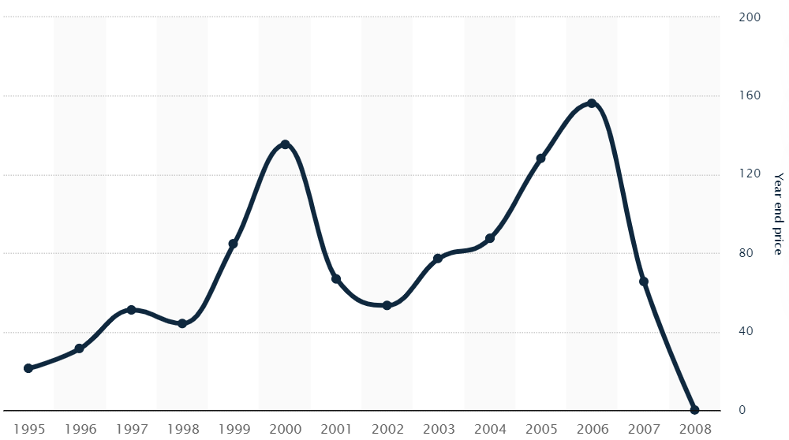
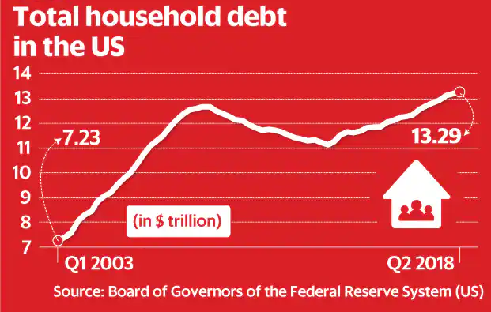

--- title: The Viscious Cycle --- stateDiagram-v2 USGB: US Government Borrowed TRL: US government kept treasury interest rates low USB: US borrowed at low interest rates USS: US Spent CJE: China / Japan earned CJL: China / Japan lent USB --> USS USS --> CJE CJE --> CJL CJL --> USGB USGB --> TRL TRL --> USB
Pageviews:
I have a close association with this story. I was born on the exact day Lehman brothers filed for bankruptcy, September 15, 2008. I therefore wanted to start my blog series by exploring what led to the Lehman Brother’s fall.
History :
The history of Lehman brothers dates back to 1884, when the three German brothers Henry, Emanuel and Mayer Lehman ran a general store in Alabama where farmers paid for their goods using cotton. Tailwinds from the US economy’s growth, helped them grow to become the 4th largest investment bank in the country. It weathered many financial storms along the way, but, a downturn in the US housing market combined with a heavily leveraged position ultimately led to its downfall.
Subprime Crisis and Mortgage Backed Securities :
Lehman Brothers branched out into Mortgage Backed Securities (MBS) and Collateralized Debt Obligations (CDO). In the euphoria that preceeded the US housing market bubble, Lehman acquired five mortgage lenders along with BNC Mortgage and Aurora Loan Services, which specialized in Alt-A loans and it seemed like it had the Midas’s touch.
What are Mortgage Backed Securities (MBS) and Collateralized Debt Obligations (CDO)?
MBSs and CDOs are a product of Financial Engineering. MBS, are securities similar to bonds that are backed by a bundle of home loans. CDO are a financial product which is backed by a pool of loans and other assets. Want to read more, then click on What are Mortgage Backed Securities (MBS) and Collateralized Debt Obligations (CDO)
What are Prime, Subprime and Alt-A loans?
Prime, Sub-Prime and Alt-A refers to the classification of a mortgage based on its risk profile. Relatively, Prime carries the least amount of risk, then comes Alt-A and then Sub-Prime. Want to read more, then click on What are Prime, Subprime and Alt-A loans
Lehman’s real estate business made a lot of money in the capital markets unit by securitizing morgages. In simple terms, banks that lent money to the home buyers, bundled mortgages as securities and sold them to investment banks like Lehman. Lehman securitized $146 billion worth of mortgages in 2006 alone. This helped their revenue grow by 56% from 2004 to 2006 and allowed them to report record profits every year from 2005 to 2007. In February 2007, Lehman’s stock price reached an all time high driving its market capitalization to nearly $60 billion.

The value of a security is based on the quality of its underlying assert. The underlying asset of the MBSs & CDOs that Lehman was buying were the mortgages. If there were no defaults on the mortgages, the MBS buyer would benefit. If, however, the mortgages were not paid back in full, the MBS would get devalued, on account of the detiorating quality of the underlying mortgages, resulting in a loss to the MBS buyer.
Lehman and its subsidiaries were buying securities backed by Alt-A and sub-prime mortgages. The risk of these mortgages getting sour was always high. When the cracks in the US housing market started to appear in the first quarter of 2007, defaults on the sub-prime mortages rose to a seven year high leading to a massive devaluation of the MBSs and CDOs they had purchased. Lehman’s stock price dropped massively when the credit crisis deepened in August 2007. In that month, the company got rid of mortgage related jobs and closed its BNC unit. It also shut down offices of Aurora, an Alt-A mortgage lender, in many states.
Heavily leveraged position
Despite this, in 2007, Lehman bought more MBS than any other company. They built up a portfolio, worth $85 billion, of these securities, which was worth 4 times it shareholder’s equity. Lehman was leaning forward and using financial leverage to fund its purchase completely ignoring all the warning signs.
As can be seen in Figure 2, the use of leverage was increasing in each of the major investment banks since 2003. In 2007, Lehman had an exceptionally high level of leverage, 31:1 and its huge portfolio of MBS made it very vulnerable to the worsening US housing market conditions. At such a high leverage even a small correction in the value of the MBS would have had a huge impact on Lehman’s portfolio. And in 2008, we were not talking about a small correction. When the housing market in the US went into a tail-spin, also referred to as the sub-prime crisis, mortgage defaults spiralled and so did Lehman’s problems.
What is a leveraged position?
Leveraged position or financial leverage is the act of borrowing money to invest. Leverage helps boosts returns when the trade is favourable but can also increase losses if the trade is unfavourable. Want to read more, then click on Financial Leverage
Implosion
Lehman’s stock came under heavy selling pressure, since it was clear that the mortgage defaults would hurt their MBS portfolio. With more sellers than buyers, Lehman’s stock dived 77% in the first week of September 2008 alone. Many attempts were made to steady the sinking ship; Lehman tried spinning off its commercial real estate assets as a separate entity; There were talks with the Korean Development Bank to invest in Lehman; And even Barclays and Bank of America made a last ditch attempt to takeover Lehman, but they all failed. And as news of each failed attempt appeared, Lehman’s stock dived down even further.
With only $1 billion left in cash, on September 15, 2008, Lehman declared bankruptcy, which caused the stock to fall by 93% from its previous close on September 12.
How could Lehman afford such high leverage
When I first read about this story, I wondered how Lehman was able to fund a leverage of 31:1. Surely there must be a financing cost associated with all the money they were borrowing. And it was not just Lehman, every other investment bank seemed to be doing it. The remainder of the post delves into this topic.
Dollar Economics
Post the World War II, global trading moved towards the US dollar. Central banks around the world were thus flush with dollar reserves and since they wanted to earn a yield on these reserves, these reserves eventually got invested into American treasury securities and other American debt securities. All this money coming into the US helped keep interest rates low. Look at it this way, the US government didn’t have to give any special incentives to attract this money. Money kept flowing into the US and the government continued to keep the treasury interest rates low. See Figure 3.
What are treasury securities?
Treasury securities are issued by the US government to fund its budget deficit, or the amount the government borrows to fill the gap between what it earns and what it spends. Treasury securities offer a fixed interest rate if held until its maturity and are considered the safest form of investment.

The yield on the treasury securities sets a reference for the overall interest rate scenario in the country. As lending to individuals and corporates is considered riskier than lending to the government, individuals and corporates are lent money at an interest rate that’s relatively higher than the yield on the treasure securities. This is done to compensate for the additional risk being taken. The risk profile of the borrower determines how much higher the interest rates are pegged in comparison to the yield on the treasury securities. But since the yield on the treasury securities was low to start with, individuals, banks and corporates were able to borrow money at reasonably low interest rates.
This allowed banks and financial firms to borrow more and more money in order to speculate in the financial markets and spruce up their returns. It also allowed individuals to borrow more than what they could ever repay and that eventually led to the real estate bubble. The total household debt in the US, went up dramatically from $7.2 trillion in early 2003 to a peak of $12.7 trillion in 2008.

In my opinion trading in US dollar has created a viscious cycle. Americans borrowed at low interest rates and bought cars from Japan and apparels and electronics from China. China and Japan would invest the earned dollars back into US by buying their treasury securities. Because of inflow of dollars, the US Government kept their interest rates low allowing Americans to borrow even more and so the cycle continued.